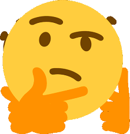

Testaa itsesi 
Itsetietoisuus on myös tapa vähentää stressiä, torjua sairauksia ja katastrofeja, rakentaa itseluottamusta ja elää tyydyttävämpää elämää. Vastaa tähän kyselyyn ja katso, kuinka arvioit itseäsi tällä alalla. Rasti oikeaan ruutuun.
-
Milloin tunnet todennäköisimmin todella arvostavasi persoonallisuuttasi?
- Päivinä, jolloin olen saanut ylennyksen
- Joka päivä
- En koskaan, olen aina epävarma
-
Anna aikaa itsellesi ja katso kuinka kauan kestää tunnistaa seuraavasta
luettelosta kolme asiaa, joihin vietät eniten aikaa viikossa työ, perhe,
rakkaus, henkisyys, terveys, ulkonäkö, rentoutuminen, raha, altruismi, ystävät
- Viisi minuuttia
- Minuutti
- Odota hetki, mietintä vielä kesken...
- Kun kehosi reagoi stressaaviin tapahtumiin, missä stressi näkyy?
Näkyykö se ihonvärin muutoksena, unirytmistäsi muutoksena,
ruoansulatushäiriöinä, olkapääkivupuina tai hengitysvaikeuksina?
- En koskaan ajatellut sitä.
- Tiedän tarkalleen missä... ja yleensä miksi
- Tiedän, mikä sattuu tai toimii väärin, mutta en koskaan ajatellut sitä stressiin liittyvänä
- Mitä teet, kun olet ostoskeskuksessa ja katselet alennuksessa olevaa vaatetelinettä?
- Katselen oman koon vaatteita
- Katselen vain värejä ja tyylejä, joista pidän, ja ohitan muut
- Katselen oman koon vaatteita ja muutamia "voi olla" kokoja
- Kun olet juhlissa ystäviesi kanssa, tiedätkö, milloin sinun on aika lopettaa ja lähteä kotiin?
- Yleensä, mutta joskus innostun
- Olen aina juhlien loppuun asti
- Menen niiden suunnitelmien mukaan, jotka muilla on
- Mitä teet, kun suunnittelet syömistä ystävien kanssa ravintolassa?
- Pyydän heitä valitsemaan paikka, koska en osaa päättää
- Valitsen paikan, sillä tiedän aina minne haluan mennä
- Keskustelen asiasta yhdessä muiden kanssa, jotta pääsemme yhteisymmärrykseen
- Voitko ajatella kolmea tapausta huonosta käytöksestäsi, jotka kävivät muiden hermoille?
- Täytyy miettiä sitä
- Kyllä, näen ne selvästi
- Tämä ei tietenkään koske minua
- Voitko nopeasti nimetä kolme toimintaa, jotka aina rentouttavat ja virkistävät?
- En ole varma, voi olla yksi tai kaksi
- Ehdottomasti
- Mietin vielä
- Jos joku kysyi sinulta, mikä on elämäntehtäväsi juuri nyt, kuinka kauan sinulla menee siihen vastaamiseen?
- Täytyy miettiä ennen kuin keksin mitään
- Kyllä, heti
- Ei, minulla ei ole aavistustakaan
- Mitkä kolme esinettä ottaisit mukaasi, jos talosi olisi tulessa?
- Tarvitsen tunnin selvittääkseen sen
- Tiedän tarkalleen mitä ne ovat
- En tietäisi
Tulkinta
Kaikki tai suurin osa ylimmistä
Olet selvästi tunkeutunut itsesi löytämiseen ja tiedät jo olevasi
ainutlaa-tuinen henkilö, jolla on erilaisia ominaisuuksia. Jotkut alueet
vaativat kuitenkin vielä työtä
Kaikki tai suurin osa keskimmäisistä
Olet itsesi paras ystävä. Kukaan ei tunne sinua paremmin kuin sinä itse
Kaikki tai suurin osa alimmista
Sinun täytyy katsoa itseesi. Saatat pärjätä pienellä itsetutkiskelulla ja löytää faktoja itsestäsi